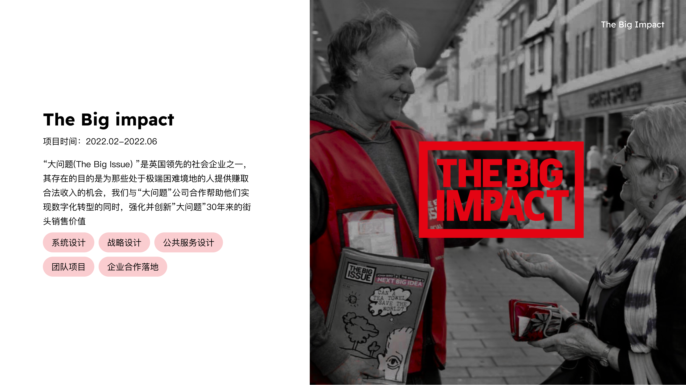

Nomo Fintech
Mapped end-to-end journeys for a UK-based Sharia-compliant digital bank, established consistent design standards and interaction patterns, and informed marketing recommendations through target-user research.
View project2022 · Annual colour / Signal yellow
A year focused on product systems and experience narratives. Full project documents present interaction logic, design standards, visual expression and user journeys in a continuous, immersive format.
Project overview
Mapped end-to-end journeys for a UK-based Sharia-compliant digital bank, established consistent design standards and interaction patterns, and informed marketing recommendations through target-user research.
View project
Original project pages presented in sequence, preserving the narrative rhythm, visual logic and information relationships through full-width browsing.
View project
A collaboration with UK social enterprise The Big Issue, exploring digital transformation while preserving the value of street sales. Presented in twelve original project pages.
View project